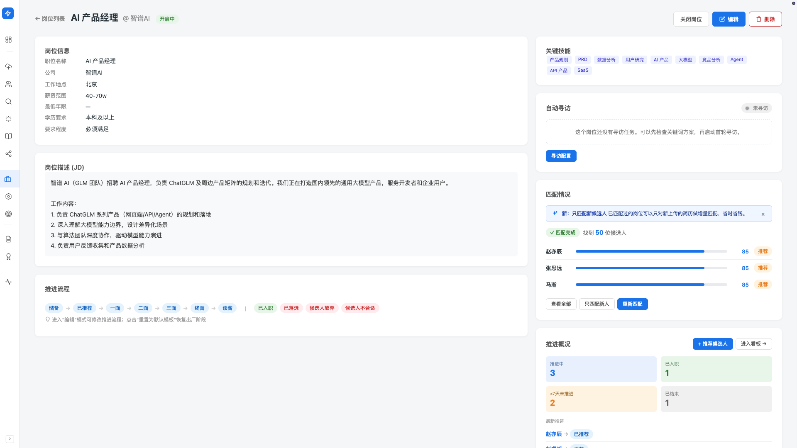
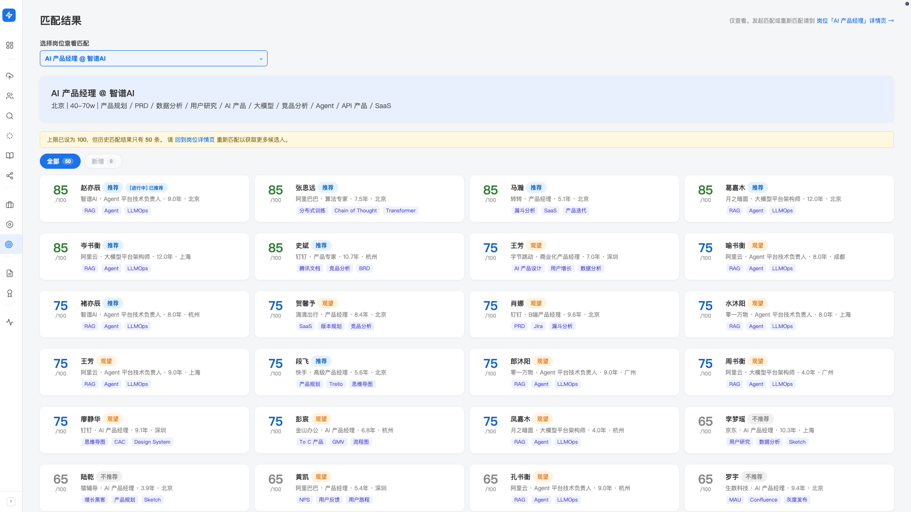

岗位智能匹配
客户给你一个岗位 JD，你想知道库里 1000 多人谁最合适—— AI 几分钟评出一份按匹配度排序的候选人列表，每个人有评分、推荐结论、强弱项分析。 新简历进来时，还能只跑新人不重跑全库。
产品里对应两个入口： 发起匹配在左侧导航「岗位（需求）」分组下的「岗位管理」→ 进入某岗位详情页； 查看结果在左侧导航「岗位（需求）」分组下的「匹配结果」。
发起一次匹配
匹配的发起入口在岗位详情页，不在「匹配结果」页（那里只能看，不能发起）。
-
打开岗位详情页
左侧导航「岗位（需求）」→「岗位管理」→ 点要匹配的岗位标题。
-
找到「匹配情况」卡片
岗位详情页里有一个「匹配情况」卡，根据是否匹配过显示不同状态：
- 未匹配：「暂无匹配记录」+ 蓝色「开始匹配」主按钮
- 进行中：进度条 + 阶段提示，「任务在后台运行，可随时离开此页面」
- 已完成：显示「找到 N 位候选人」+ Top 3 预览 + 操作按钮（查看全部/只匹配新人/重新匹配）
- 失败：错误提示 + 重试按钮
-
点「开始匹配」
AI 会读取岗位 JD（标题、要求、技能、年限、学历、薪资、地点等）， 与候选人库里每个人做多维度评估，按综合分排序。 1000 人量级几分钟跑完，过程中你可以去做别的事。
-
看结果
匹配完成后，卡片里直接显示头部预览； 点「查看全部」跳到「匹配结果」页面看完整列表。

增量匹配：只跑新人
这是 Hunter 的杀手锏之一。日常情况： 某个岗位你已经匹配过一遍，挑出了头部候选人； 今天又导入了 50 份新简历—— 没必要让 AI 重跑全库 1000+ 人，只对新增的 50 人做匹配， 看是不是有人能挤进头部就行。
- 岗位详情页 → 匹配情况卡片（已完成态）
-
点「只匹配新人」按钮
系统识别出"上次匹配后新增的候选人"，只对这部分跑评分。
-
看新人合并到结果列表里
本次新匹配的候选人会有 NEW 角标，方便你一眼看出这次新增的人是谁。
如果你改了岗位 JD 的关键字段（如要求年限、技能、薪资范围）， 老的评分是按旧标准给的，已经不准了——这时要用「重新匹配」全量重跑。 岗位 JD 没动、只是新简历进来，用「只匹配新人」。
读懂匹配结果
每个候选人在结果列表里展示这些信息：
综合评分
0–100 的整数分。分数本身不是绝对的，要结合推荐结论看。 分数高不代表"100% 合适"，是相对于这个岗位的匹配度。
推荐结论
AI 把综合判断浓缩成四档标签：
- 强烈推荐（绿色）：核心维度全部对齐，可以放心联系
- 推荐（蓝色）：大方向对，可能有 1-2 项有差异，看了细节再判断
- 观望（黄色）：有亮点但也有明显风险，谨慎对待
- 不推荐（灰色）：关键维度差距明显，一般可以跳过
风险标记
对个别维度有明显偏差时，会单独标出风险，避免你只看综合分忽略硬伤：
- 年限风险：候选人工作年限明显低于岗位要求（如要求 5 年但候选人只有 2 年），或年限信息缺失无法判断
- 学历风险：候选人学历与岗位最低要求有差距
风险标记不会强行排除候选人——你看的是"AI 提醒你，但你来判断"，不是"AI 替你决定"。
在「匹配结果」页的卡片网格里，点任意候选人卡片， 会弹出匹配详情——展示 AI 给出的匹配优势、风险点、综合建议， 以及评分的拆解逻辑。这是你判断"要不要推这个人"的核心依据。
「匹配结果」总览页
想看某岗位完整匹配列表、做筛选、批量挑人——去左侧导航 「岗位（需求）」→「匹配结果」。
页面结构：
- 顶部岗位选择器：下拉单选某个岗位，看它的匹配结果
- 岗位摘要卡：标题、公司、地点、薪资范围、年限要求、关键技能—— 一眼回顾这个岗位要什么样的人
- 结果筛选： 全部 / 新增（仅本次增量匹配新增的候选人，无新增时置灰） / 已移除（你手动移除的候选人，可在这里找回）
- 卡片网格（2-3 列）：每个候选人一张卡，显示评分、推荐结论、风险标记， 已经进入推进流程的候选人会有推进状态标识

展示上限与最低分
在「设置 → 匹配策略」里有两项可以调，控制结果列表里出现哪些人：
- 最多返回数量：默认只展示前若干名候选人，避免你被一千张卡片淹没；想看更多就把它调大
- 最低分数：低于这个分的候选人不会出现在结果里，调高它可以只看高匹配度的人
- 历史不足时会提示：如果你把上限设成 100 但历史结果只有 30，会建议你回岗位详情页重新匹配
最佳实践
AI 评估的依据是岗位详情页里的 JD 信息—— 技能要求、年限、学历、 薪资范围、工作地点都填齐，再做匹配。 JD 越具体，AI 给出的强弱项分析越有依据。
导入 → 去重（重复候选人发现） → 增量匹配（只匹配新人）—— 这套流程跑下来，新简历几分钟就能告诉你「有没有人能挤进头部」， 比每次重跑全库快得多。
常见提示
如果你改了岗位 JD（如调整了技能要求、薪资范围）， 页面会显示横幅：「当前匹配结果基于旧岗位要求生成」。 回到岗位详情页点「重新匹配」，用新 JD 重新跑一次。
匹配卡片显示「✕ 匹配失败」时，点「重试」即可重新发起。 如果反复失败，检查岗位 JD 是否极端简略（只有标题，没有任何要求）， AI 没有依据时会拒绝匹配。
岗位被关闭后不能再加新推荐，但匹配结果还能正常看， 已有的推进 pipeline 也能继续跟进。 要重启匹配，回岗位列表把岗位状态改回开启。